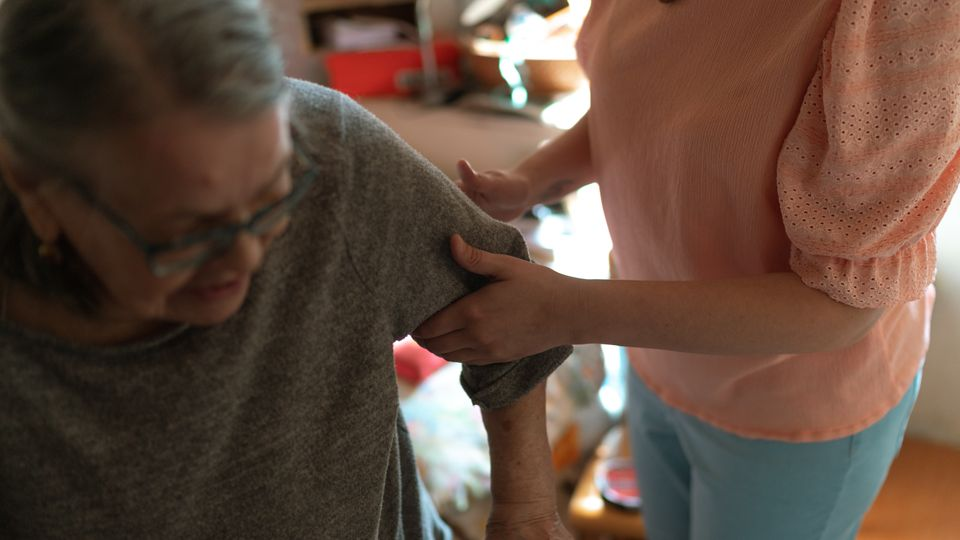

Direitos da Pessoa Idosa
Atendimento ao Idoso
Orientações sobre proteção, convivência e acesso a direitos e serviços para pessoas idosas.

O que é esse serviço?
A rede pública atua para apoiar a autonomia, a convivência familiar e comunitária e a proteção dos direitos da pessoa idosa. As necessidades podem envolver assistência social, saúde e outros serviços. Cada atendimento tem seu próprio fluxo de acesso.
Para quem é?
Pessoas idosas, familiares e pessoas de referência que precisam de orientação sobre cuidado, direitos e proteção social.
Como pode ajudar?
- Orientação sobre acesso a serviços e direitos da pessoa idosa.
- Informações sobre atividades de convivência e fortalecimento de vínculos.
- Encaminhamento à proteção especializada quando há violação de direitos.
Como buscar atendimento?
- Procure o CRAS de referência para orientação socioassistencial.
- Consulte os canais municipais de Direitos Humanos para conhecer as ofertas voltadas à pessoa idosa.
- Confirme os requisitos do serviço desejado; não há concessão automática de benefícios por esta página.
Saiba mais nos canais oficiais
Ministério dos Direitos Humanos — direitos da pessoa idosa (abre em outra aba)
Orientações consultadas em 26/10/2026.